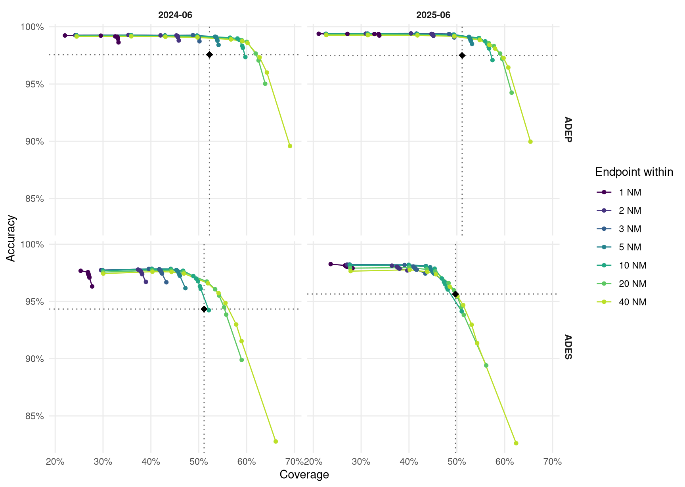

| Sample | Days | Ground-truth flights | State vectors |
|---|---|---|---|
| 2024-06 | 2024-06-05, 2024-06-06, 2024-06-07 | 92,825 | 111,487,350 |
| 2025-06 | 2025-06-05, 2025-06-06, 2025-06-07 | 95,136 | 105,734,448 |
Detecting departure and destination aerodromes from ADS-B
A methodology comparison against EUROCONTROL APDF ground truth
Summary
The OPDI flight list assigns each flight a departure aerodrome (ADEP) and a destination aerodrome (ADES) from ADS-B alone. The production algorithm tests the sign of a smoothed altitude trend near each candidate aerodrome and discards every flight whose trend is ambiguous. It is accurate where it speaks — 97.50% on ADEP — and silent on almost half of all flights.
We compared seven methodologies against EUROCONTROL APDF ground truth over two three-day samples a year apart, 187,961 flights in total. Three findings:
Coverage is the problem, not accuracy. Every trend-based method scores above 94% where it fires, and none covers more than 57% of flights.
The vertical-trend machinery earns nothing. Attributing a cascade’s answers to the rung that supplied them shows that the simplest possible rule — the nearest aerodrome to the track’s first and last sample — is at least as accurate as every trend-based method on that method’s own flights, in both samples. A five-stage cascade built on those methods collapses exactly onto the one-line rule, to two decimal places, in both months.
Replacing the trend logic with explicit abstention improves departures, and does not improve arrivals. Naming the nearest aerodrome to the endpoint, but staying silent unless that endpoint is credibly at an aerodrome, beats the production algorithm on coverage and accuracy at once for ADEP — by 8 to 10 percentage points of coverage — in both samples. For ADES the same construction wins in one sample and not in the other, so we do not claim it.
NoteWhat changed since the first draft
An earlier version of this page reported a single day and stated finding 3 without restricting it to departures. Scoring the second sample removed that claim for arrivals: in 2024-06 endpoint abstention beats production on ADES by +4.47 pp of coverage at matched accuracy, and in 2025-06 the best it can do is -0.28 pp. Fitting on one month and validating on the other is what caught it.
1 Why this is hard
An ADS-B trajectory does not carry its origin or destination. Both must be inferred from where the aircraft was and what it was doing, and the inference fails in a specific, asymmetric way: reception near the ground is patchy. A receiver 50 NM from a regional aerodrome sees an aircraft in the cruise perfectly and never sees it below 2,000 ft. So the evidence that would settle the question — surface movement, the take-off roll, the flare — is exactly the evidence most often missing.
Three consequences shape everything below:
- Tracks frequently begin or end in mid-air. A track that starts in the cruise has no departure evidence at all, and any method that names an aerodrome for it is guessing.
- Departure and destination are not symmetric. Departure evidence is a climb from a known point; destination evidence is a descent to one. This asymmetry turns out to drive the study’s main negative result.
- Nearby aerodromes compete. Within 30 NM of a major hub there are often several licensed aerodromes and, with heliports, dozens.
2 Data
2.1 Samples
Two three-day samples, 2025-06-05 to 07 and 2024-06-05 to 07, chosen a year apart so that a threshold fitted on one can be validated on the other.
The sample is small in days, not in flights. What a longer run would buy is representativeness across day of week and season, not statistical power; the year-apart design addresses the part of that which matters most.
2.2 Trajectories
State vectors come from the OpenSky Network historical archive, filtered to the OPDI European bounding box and decimated to 5 s — byte-for-byte the filter the production ingestion applies, so the benchmark evaluates the same population the pipeline ingests. Tracks are built with OPDI’s own track-splitting algorithm, imported and called rather than reimplemented, since track_id continuity with published data depends on it.
2.3 Aircraft selection
Only aeroplanes are in scope. Helicopters defeat every aerodrome-based method — they depart from and arrive at places no aerodrome database lists — and they are 9.8% of classified airframes in the OpenSky aircraft database. Filtering uses the ICAO Doc 8643 aircraft class, keeping L (landplane) and A (amphibian). The field is present on ~73% of the database; these results exclude unknowns, protecting precision at some cost to coverage.
2.4 Ground truth
APDF flights_tidy provides ADEP, ADES and off-block time per flight. AIRCRAFT_ADDRESS is the ICAO 24-bit address, the join key to ADS-B; flights match on (icao24, callsign, date). 2.42% of those keys collide — same-day multi-leg rotations — and are resolved by proximity to actual off-block time.
3 How methods are scored
Ground truth is the denominator throughout. For real flights \(G\) and a method answering on \(A \subseteq G\):
- Coverage \(= |A| / |G|\) — the fraction of real flights answered at all. A flight whose trajectory was never seen counts as a miss.
- Accuracy \(= |\text{correct}| / |A|\) — how often it is right when it speaks.
- Overall \(= |\text{correct}| / |G|\) — coverage times accuracy.
All three matter, because the production algorithm and its alternatives sit at opposite ends of one trade: one is nearly always right and usually silent, the other nearly always speaks and is often wrong.
NoteThe coverage ceiling
No method exceeds ~73% coverage, because that is roughly the share of APDF flights with a usable ADS-B track in the sample at all. The remaining ~27% is a data-availability limit, not an algorithmic one.
4 The candidate methods
| Method | Signal | |
|---|---|---|
| M0 | Current production | Sign of a 5-sample rolling-mean altitude difference near each candidate aerodrome, margin of 4; ambiguous flights dropped |
| M1 | traffic library | Nearest aerodrome to the track’s first sample (ADEP) and last sample (ADES). No altitude, no trend, no ground state |
| M2 | On-ground | Aerodrome at the surface samples bracketing the airborne phase |
| M3 | Vertical rate | Sign of the measured vert_rate near each candidate aerodrome |
| M5 | Lowest and nearest | Aerodrome where the track is lowest and closest, split at the track midpoint |
| M6 | Cascade | Take the most precise available answer, falling through when a rung is silent |
| M7 | Endpoint with abstention | M1’s naming rule, silent unless the endpoint is close to the aerodrome and low over it |
M1 recreates TakeoffAirportInference / LandingAirportInference from the traffic library. M2 and M3 use columns the production algorithm already selects and never reads: on_ground and vert_rate.
5 Results
| Sample | Method | ADEP cov | ADEP acc | ADEP overall | ADES cov | ADES acc | ADES overall |
|---|---|---|---|---|---|---|---|
| 2024-06 | M6_cascade | 73.48% | 84.60% | 62.16% | 73.46% | 75.31% | 55.32% |
| 2024-06 | M1_traffic | 71.75% | 86.63% | 62.16% | 70.44% | 78.51% | 55.30% |
| 2024-06 | M7_abstain | 56.55% | 99.05% | 56.01% | 48.87% | 97.22% | 47.51% |
| 2024-06 | M3_vert_rate | 54.94% | 97.04% | 53.31% | 51.52% | 94.93% | 48.91% |
| 2024-06 | M5_min_alt | 68.03% | 77.26% | 52.56% | 67.85% | 72.54% | 49.22% |
| 2024-06 | M0_current | 52.22% | 97.57% | 50.95% | 51.11% | 94.34% | 48.22% |
| 2024-06 | M2_on_ground | 23.59% | 97.78% | 23.07% | 26.21% | 96.43% | 25.28% |
| 2025-06 | M1_traffic | 67.96% | 86.99% | 59.13% | 66.78% | 78.30% | 52.29% |
| 2025-06 | M6_cascade | 69.66% | 84.87% | 59.13% | 69.60% | 75.15% | 52.31% |
| 2025-06 | M7_abstain | 54.63% | 99.03% | 54.10% | 46.86% | 97.01% | 45.46% |
| 2025-06 | M3_vert_rate | 53.58% | 96.90% | 51.92% | 50.10% | 95.68% | 47.94% |
| 2025-06 | M5_min_alt | 65.32% | 78.60% | 51.34% | 65.10% | 73.66% | 47.95% |
| 2025-06 | M0_current | 51.10% | 97.50% | 49.82% | 49.71% | 95.65% | 47.55% |
| 2025-06 | M2_on_ground | 23.19% | 95.63% | 22.17% | 26.83% | 93.16% | 24.99% |
The shape of the table is the first finding, and it is the same in both samples. The production algorithm M0 is among the most accurate methods tested and among the worst by overall correctness, because it declines to answer nearly half the flights. traffic’s one-line nearest-aerodrome rule, with no aviation logic in it whatsoever, gets more flights right in absolute terms than any trend-based method.
That is not an argument for adopting M1 as it stands — an 86.99% ADEP accuracy would be a serious regression for a flight list downstream users treat as authoritative. It is an argument that the trend logic is not where the value is.
6 The cascade, and why it fails
The natural response is a cascade: take M0’s answer when it speaks, fall through to M3, then M2, and use M1 only as a last resort. The strong signals keep their precision and M1 supplies coverage where they are silent.
It does not work, and the way it fails is instructive.
A cascade’s accuracy is not bounded below by its rungs’ accuracies, because each rung is scored only on the flights the rungs above it could not answer, which are the harder ones. So a cascade scoring below every method it is built from is not by itself evidence of a bug. What it must not do is score below its own fallback rung used alone — that means some rung is actively overwriting better answers.
To test that, every cascade answer is attributed to the rung that supplied it, and that rung is scored against a control on the same flights:
| Sample | Rung | Flights answered | Share of all | Its accuracy | M1 on the same flights | Lift |
|---|---|---|---|---|---|---|
| 2024-06 | m0 | 48,477 | 52.22% | 97.57% | 99.07% | -1.51 pp |
| 2024-06 | m3 | 2,726 | 2.94% | 88.85% | 93.21% | -4.37 pp |
| 2024-06 | m2 | 313 | 0.34% | 13.42% | 46.96% | -33.55 pp |
| 2024-06 | m1 | 15,182 | 16.36% | 46.00% | 46.00% | +0.00 pp |
| 2024-06 | m5 | 1,509 | 1.63% | 0.20% | 0.00% | +0.20 pp |
| 2025-06 | m0 | 48,617 | 51.10% | 97.50% | 99.20% | -1.70 pp |
| 2025-06 | m3 | 2,510 | 2.64% | 85.14% | 91.95% | -6.81 pp |
| 2025-06 | m2 | 782 | 0.82% | 7.42% | 44.37% | -36.96 pp |
| 2025-06 | m1 | 12,859 | 13.52% | 41.74% | 41.74% | +0.00 pp |
| 2025-06 | m5 | 1,507 | 1.58% | 0.00% | 0.00% | +0.00 pp |
The lift is negative in every row of both samples. So the trend methods do not look precise because they reason well about trajectories. They look precise because they fire on easy flights — those with unambiguous low-altitude coverage near a single aerodrome — and on exactly those flights, “which aerodrome is nearest the endpoint” is already the right answer, slightly more often than the trend vote is.
Running the same cascade with M1 first confirms it: the cascade’s overall correctness becomes indistinguishable from M1 alone.
| Sample | M1 ADEP overall | M6 ADEP overall | M1 ADES overall | M6 ADES overall |
|---|---|---|---|---|
| 2024-06 | 62.16% | 62.16% | 55.30% | 55.32% |
| 2025-06 | 59.13% | 59.13% | 52.29% | 52.31% |
TipThe reframing
The five methods differ in when they are willing to answer, not in what they answer. Their apparent precision is an abstention policy wearing a naming rule’s clothes — and an expensive one, since it discards half the flights to buy accuracy it does not deliver.
So the design question is not which signal should name the aerodrome. It is when to stay silent. And that is a property of the endpoint, not of the trajectory’s shape.
7 Abstention on the endpoint
M7 keeps M1’s naming rule and adds an explicit two-parameter test. An ADEP is emitted only if the track’s first sample is within \(d\) NM of the nearest aerodrome and no more than \(h\) ft above that aerodrome’s elevation; ADES uses the last sample. Height is measured above field elevation rather than above the ellipsoid, because a fixed 1,000 ft cut-off means nothing at an aerodrome sitting at 5,000 ft. A sample flagged on_ground satisfies the height test outright.

The height threshold does nearly all the work. Moving the radius from 10 NM to 40 NM changes ADEP coverage by a fraction of a point; moving the height cut from on-ground-only to 5,000 ft AGL moves it by tens of points. An aircraft below 5,000 ft AGL is in the terminal area of the aerodrome it is nearest to, and being 30 NM out at that height does not make it ambiguous. The radius parameter, which is where the production algorithm spends its tuning effort, is close to irrelevant.
7.1 Which operating points beat production
| Sample | Side | Cells | Best point | Coverage | M0 cov | Accuracy | M0 acc |
|---|---|---|---|---|---|---|---|
| 2024-06 | ADEP | 18/70 | 20 NM, 15,000 ft | 61.88% | 52.22% | 97.67% | 97.57% |
| 2024-06 | ADES | 7/70 | 40 NM, 10,000 ft | 55.58% | 51.11% | 94.86% | 94.34% |
| 2025-06 | ADEP | 18/70 | 20 NM, 15,000 ft | 59.04% | 51.10% | 97.67% | 97.50% |
| 2025-06 | ADES | 0/70 | — | — | 49.71% | — | 95.65% |
For departures the answer is unambiguous and it replicates: 18 of 70 grid cells beat production on both axes in each sample, and the best of them — 20 NM and 15,000 ft AGL — reaches 59.04% coverage in 2025-06 and 61.88% in 2024-06, at 97.67% accuracy in both. That is 8 to 10 percentage points of coverage over production at slightly better accuracy.
For arrivals it does not replicate. In 2024-06 seven cells beat production, the best by +4.47 pp of coverage at matched accuracy. In 2025-06 none do: production already sits on the achievable frontier, and the closest M7 gets is -0.28 pp. Two three-day samples disagree, so the honest conclusion is that endpoint abstention does not demonstrably improve ADES.
Why the sides differ is not mysterious. A departure’s first sample is either at a stand or it is not, and the aircraft was stationary moments earlier. An arrival’s last sample is more often a loss of reception during descent than a landing — it can be anywhere on the approach, at any height, tens of miles out. The endpoint is simply a weaker instrument for arrivals, and no threshold on it recovers what was never observed.
8 Per-aerodrome movement counts
Flight-level accuracy can hide errors that cancel: a departure misattributed from A to B leaves both counts wrong and the total right. Movement counts per aerodrome are the number an operational user actually reads, so they are reported separately.
The comparison is restricted to aerodromes the method could ever have named — European large and medium airports inside the sampled bounding box. Ground truth names every destination a flight really had, including small fields and airports on other continents; an unrestricted comparison measures that mismatch rather than the method.
| Sample | Movements | Aerodromes | Count ratio | Median recall | Median recall, 50+ movements |
|---|---|---|---|---|---|
| 2024-06 | departures | 670 | 0.618 | 33.33% | 66.67% |
| 2024-06 | arrivals | 669 | 0.533 | 22.08% | 58.14% |
| 2025-06 | departures | 683 | 0.599 | 27.27% | 63.78% |
| 2025-06 | arrivals | 677 | 0.511 | 22.22% | 54.03% |
| Aerodrome | APDF departures | OPDI assigned | Count ratio | Recall |
|---|---|---|---|---|
| LTFM | 2,282 | 1,711 | 0.75 | 74.72% |
| EHAM | 2,148 | 1,613 | 0.75 | 74.35% |
| EDDF | 2,094 | 1,729 | 0.83 | 82.43% |
| LFPG | 2,084 | 1,616 | 0.78 | 77.06% |
| EGLL | 2,001 | 1,575 | 0.79 | 78.66% |
| LEMD | 1,773 | 1,346 | 0.76 | 75.92% |
| LEBL | 1,591 | 1,248 | 0.78 | 78.32% |
| EDDM | 1,573 | 1,273 | 0.81 | 80.80% |
| LIRF | 1,449 | 935 | 0.65 | 64.53% |
| LTAI | 1,435 | 723 | 0.50 | 50.03% |
Two things stand out. The error is always an undercount — no aerodrome is credited with movements it did not have. That is the good failure mode: a systematic undercount can be corrected for, an overcount cannot. And recall scales with aerodrome size: 75–87% at the busiest hubs, around 65% median at aerodromes with 50 or more movements, and poor in the long tail. OPDI’s flight list is substantially more complete at large aerodromes than small ones, which is worth knowing before using it for a comparison across aerodrome classes.
The exception is instructive: LTAI (Antalya) sits at a count ratio of 0.50 in 2025-06 and 0.26 in 2024-06, far below every comparable hub. That is a receiver-coverage blackspot, not an algorithmic failure, and no change to the detection rule will fix it.
9 Recommendation
For departures, adopt endpoint abstention. Nearest aerodrome to the track’s first sample, emitted only when that sample is within 20 NM and below 15,000 ft above field elevation. This is a smaller algorithm than the one it replaces — no smoothing window, no margin parameter, no per-aerodrome vote — and it gains 8 to 10 percentage points of ADEP coverage at slightly better accuracy, in both samples.
For arrivals, do not change the algorithm on this evidence. The same construction wins in one sample and loses in the other. If ADES coverage is judged more valuable than the last point of accuracy, the frontier above gives the available trades explicitly — but that is a policy decision, not a finding.
In both cases the thresholds should be published alongside the flight list, and the abstention reason retained per flight, so downstream users can distinguish “no departure aerodrome” from “departure aerodrome not determinable”. The current algorithm collapses those into a null, a loss of information that costs nothing to preserve.
10 Limitations
- Six days. Two three-day samples. What a longer run would buy is representativeness across day of week and season, not statistical power. The ADES result shows the exposure is real: two samples a year apart disagreed.
- No trajectory cleaning. State vectors are raw apart from the bounding box and decimation. OPDI’s cleaning stage is implemented and not yet applied here, and whether it helps is genuinely open: the stale-broadcast filter nulls repeated positions, which is precisely what a stationary aircraft at a gate transmits. It could remove the very samples the endpoint rule depends on. This will be measured as an ablation, not assumed.
- Aircraft filtering is one layer of three. The ADS-B emitter category — the only field naming surface vehicles — is dropped by the reference pipeline stage and would need retaining. A behavioural filter requiring a sustained airborne period is database-independent and would catch the 27% of airframes with no recorded class.
- Aerodrome set is fixed. All results use large and medium airports. Sweeping small airports and heliports is implemented but not yet reported.
- The two sides share one threshold pair. M7 applies the same \(d\) and \(h\) to departures and arrivals. Given how differently the two behave, fitting them separately is the obvious next step.
11 Reproducing
Everything is in the opdi repository under benchmarks/, and every dataset written is registered in benchmarks/DATASETS.md.
# 1. Sample state vectors from the OpenSky archive into S3
python benchmarks/osn_sample.py 2025-06-05 2025-06-08
# 2. Score every method
python benchmarks/adep_ades.py --days 2025-06-05 2025-06-06 2025-06-07 \
--months 202506 --methods all --ladder m1 m0 m3 m2 m5 --sweep-abstain
# 3. Attribute the cascade's answers, and count movements per aerodrome
python benchmarks/adep_ades.py --days 2025-06-05 2025-06-06 2025-06-07 \
--months 202506 --methods none --diagnose-cascade --control m1 \
--per-airport M7_abstain
# 4. Refresh this page's CSV cache (both samples)
python benchmarks/export_results.pySteps 1–3 run on the OpenSky Kubernetes cluster and need credentials; step 4 needs S3 read access. Rendering this page needs neither — no credentials, no database, no cluster.